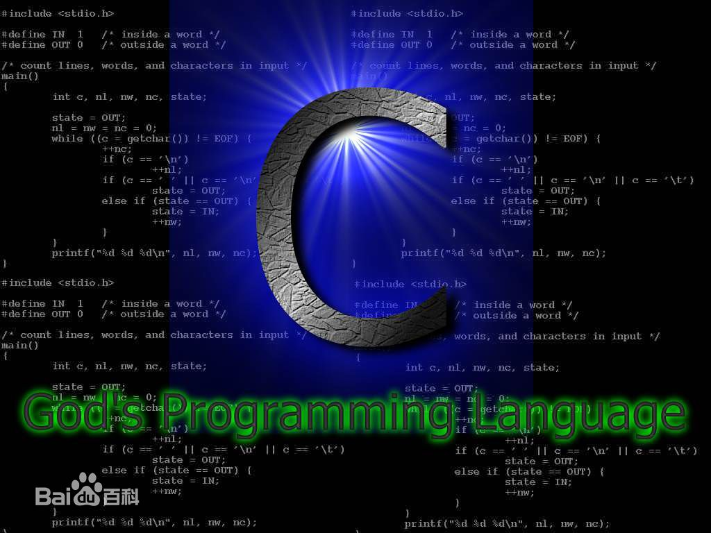
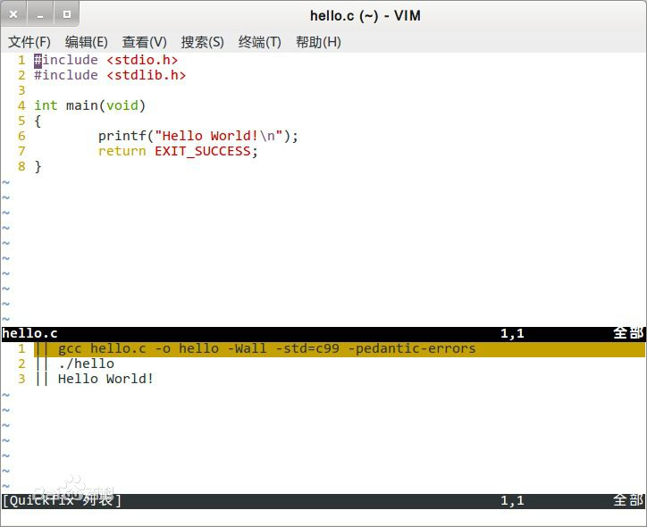

-
C语言
C语言是一门通用计算机编程语言，应用广泛。C语言的设计目标是提供一种能以简易的方式编译、处理低级存储器、产生少量的机器码以及不需要任何运行环境支持便能运行的编程语言。
尽管C语言提供了许多低级处理的功能，但仍然保持着良好跨平台的特性，以一个标准规格写出的C语言程序可在许多电脑平台上进行编译，甚至包含一些嵌入式处理器（单片机或称MCU）以及超级电脑等作业平台。
二十世纪八十年代，为了避免各开发厂商用的C语言语法产生差异，由美国国家标准局为C语言制定了一套完整的美国国家标准语法，称为ANSI C，作为C语言最初的标准。 目前2011年12月8日，国际标准化组织（ISO）和国际电工委员会（IEC）发布的C11标准是C语言的第三个官方标准，也是C语言的最新标准，该标准更好的支持了汉字函数名和汉字标识符，一定程度上实现了汉字编程。
- 中文名
- C语言
- 外文名
- The C Programming Language
- 类 别
- 计算机程序设计语言
- 创始人
- Dennis MacAlistair Ritchie
- 创始时间
- 1972年
- 发 源
- BCPL语言
- 主要编译器
- Clang、GCC、MSVC、Turbo C等
- 启发语言
- B语言、汇编、ALGOL68
- 操作系统
- 多平台
发展历史
C语言之所以命名为C，是因为 C语言源自Ken Thompson发明的B语言，而 B语言则源自BCPL语言。
1967年，剑桥大学的Martin Richards对CPL语言进行了简化，于是产生了BCPL（Basic Combined Programming Language）语言。

c语言宣传图
20世纪60年代，美国AT&T公司贝尔实验室（AT&T Bell Laboratory）的研究员Ken Thompson闲来无事，手痒难耐，想玩一个他自己编的，模拟在太阳系航行的电子游戏——Space Travel。他背着老板，找到了台空闲的机器——PDP-7。但这台机器没有操作系统，而游戏必须使用操作系统的一些功能，于是他着手为PDP-7开发操作系统。后来，这个操作系统被命名为——UNIX。
1970年，美国贝尔实验室的 Ken Thompson，以BCPL语言为基础，设计出很简单且很接近硬件的B语言（取BCPL的首字母）。并且他用B语言写了第一个UNIX操作系统。
1971年，同样酷爱Space Travel的Dennis M.Ritchie为了能早点儿玩上游戏，加入了Thompson的开发项目，合作开发UNIX。他的主要工作是改造B语言，使其更成熟。
1972年，美国贝尔实验室的 D.M.Ritchie 在B语言的基础上最终设计出了一种新的语言，他取了BCPL的第二个字母作为这种语言的名字，这就是C语言。
1973年初，C语言的主体完成。Thompson和Ritchie迫不及待地开始用它完全重写了UNIX。此时，编程的乐趣使他们已经完全忘记了那个"Space Travel"，一门心思地投入到了UNIX和C语言的开发中。随着UNIX的发展，C语言自身也在不断地完善。直到今天，各种版本的UNIX内核和周边工具仍然使用C语言作为最主要的开发语言，其中还有不少继承Thompson和Ritchie之手的代码。
在开发中，他们还考虑把UNIX移植到其他类型的计算机上使用。C语言强大的移植性（Portability）在此显现。机器语言和汇编语言都不具有移植性，为x86开发的程序，不可能在Alpha,SPARC和ARM等机器上运行。而C语言程序则可以使用在任意架构的处理器上，只要那种架构的处理器具有对应的C语言编译器和库，然后将C源代码编译、连接成目标二进制文件之后即可运行。
1977年，Dennis M.Ritchie发表了不依赖于具体机器系统的C语言编译文本《可移植的C语言编译程序》。
C语言继续发展，在1982年，很多有识之士和美国国家标准协会为了使这个语言健康地发展下去，决定成立C标准委员会，建立C语言的标准。委员会由硬件厂商，编译器及其他软件工具生产商，软件设计师，顾问，学术界人士，C语言作者和应用程序员组成。1989年，ANSI发布了第一个完整的C语言标准——ANSI X3.159—1989，简称“C89”，不过人们也习惯称其为“ANSI C”。C89在1990年被国际标准组织ISO(International Organization
for Standardization)一字不改地采纳，ISO官方给予的名称为：ISO/IEC 9899，所以ISO/IEC9899: 1990也通常被简称为“C90”。1999年，在做了一些必要的修正和完善后，ISO发布了新的C语言标准，命名为ISO/IEC 9899：1999，简称“C99”。 在2011年12月8日，ISO又正式发布了新的标准，称为ISO/IEC9899: 2011，简称为“C11”。
编程开发
编译器
GCC，GNU组织开发的开源免费的编译器
MinGW，Windows操作系统下的GCC
Clang，开源的BSD协议的基于LLVM的编译器
Visual C++ :: cl.exe，Microsoft VC++自带的编译器
集成开发环境
CodeBlocks，开源免费的C/C++ IDE
CodeLite，开源、跨平台的C/C++集成开发环境
Orwell Dev-C++，可移植的C/C++IDE
C-Free
Light Table
Visual Stdio系列
Hello World
下面是一个在标准输出设备 (stdout) 上，印出 "Hello, world!" 字符串的简单程序。类似的程序，通常作为初学编程语言时的第一个程序：
|
1
2
3
4
5
6
7
|
#include <stdio.h>int main(void){ printf("Hello, world!"); return 0;} |
语言标准
起初，C语言没有官方标准。1978年由美国电话电报公司(AT&T）贝尔实验室正式发表了C语言。布莱恩·柯林汉（Brian Kernighan） 和 丹尼斯·里奇（Dennis Ritchie） 出版了一本书，名叫《The C Programming Language》。这本书被 C语言开发者们称为K&R，很多年来被当作 C语言的非正式的标准说明。人们称这个版本的 C语言为K&R C。
K&R C主要介绍了以下特色：
结构体（struct）类型
长整数（long int）类型
无符号整数（unsigned int）类型
把运算符=+和=-改为+=和-=。因为=+和=-会使得编译器不知道使用者要处理i = -10还是i =- 10，使得处理上产生混淆。
即使在后来ANSI C标准被提出的许多年后，K&R C仍然是许多编译器的最 准要求，许多老旧的编译器仍然运行K&R C的标准。
1970到80年代，C语言被广泛应用，从大型主机到小型微机，也衍生了C语言的很多不同版本。
1983年，美国国家标准协会（ANSI）成立了一个委员会X3J11，来制定 C语言标准。
1989年，美国国家标准协会（ANSI）通过了C语言标准，被称为ANSI X3.159-1989 "Programming Language C"。因为这个标准是1989年通过的，所以一般简称C89标准。有些人也简称ANSI C，因为这个标准是美国国家标准协会（ANSI）发布的。
1990年，国际标准化组织（ISO）和国际电工委员会（IEC）把C89标准定为C语言的国际标准，命名为ISO/IEC 9899:1990 - Programming languages -- C 。因为此标准是在1990年发布的，所以有些人把简称作
C90标准。不过大多数人依然称之为C89标准，因为此标准与ANSI C89标准完全等同。
1994年，国际标准化组织（ISO）和国际电工委员会（IEC）发布了C89标准修订版，名叫ISO/IEC 9899:1990/Cor 1:1994 ，有些人简称为
C94标准。
1995年，国际标准化组织（ISO）和国际电工委员会（IEC）再次发布了C89标准修订版，名叫ISO/IEC 9899:1990/Amd 1:1995 - C Integrity ，有些人简称为
C95标准。
C99标准
1999年1月，国际标准化组织（ISO）和国际电工委员会（IEC）发布了C语言的新标准，名叫ISO/IEC 9899:1999 - Programming languages -- C ，简称
C99标准。这是C语言的第二个官方标准。
在C99中包括的特性有：
-
增加了对编译器的限制，比如源程序每行要求至少支持到 4095 字节，变量名函数名的要求支持到 63 字节（extern 要求支持到 31）。
-
增强了预处理功能。例如：
-
宏支持取可变参数 #define Macro(...) __VA_ARGS__
-
使用宏的时候，允许省略参数，被省略的参数会被扩展成空串。
-
支持 // 开头的单行注释（这个特性实际上在C89的很多编译器上已经被支持了）
-
增加了新关键字 restrict, inline, _Complex, _Imaginary, _Bool
-
支持 long long, long double _Complex, float _Complex 等类型
-
支持不定长的数组，即数组长度可以在运行时决定，比如利用变量作为数组长度。声明时使用 int a[var] 的形式。不过考虑到效率和实现，不定长数组不能用在全局，或 struct 与 union 里。
-
变量声明不必放在语句块的开头，for 语句提倡写成 for(int i=0;i<100;++i) 的形式，即i 只在 for 语句块内部有效。
-
允许采用（type_name）{xx,xx,xx} 类似于 C++ 的构造函数的形式构造匿名的结构体。
-
复合字面量：初始化结构的时候允许对特定的元素赋值，形式为：struct test{int a[3]，b;} foo[] = { [0].a = {1}, [1].a = 2 };
-
struct test{int a, b, c, d;} foo = { .a = 1, .c = 3, 4, .b = 5 }; // 3,4 是对 .c,.d 赋值的
-
格式化字符串中，利用 \u 支持 unicode 的字符。
-
支持 16 进制的浮点数的描述。
-
printf scanf 的格式化串增加了对 long long int 类型的支持。
-
浮点数的内部数据描述支持了新标准，可以使用 #pragma 编译器指令指定。
-
除了已有的 __line__ __file__ 以外，增加了 __func__ 得到当前的函数名。
-
允许编译器化简非常数的表达式。
-
修改了 /% 处理负数时的定义，这样可以给出明确的结果，例如在C89中-22 / 7 = -3, -22% 7 = -1，也可以-22 / 7= -4, -22% 7 = 6。 而C99中明确为 -22 / 7 = -3, -22% 7 = -1，只有一种结果。
-
取消了函数返回类型默认为 int 的规定。
-
允许 struct 定义的最后一个数组不指定其长度，写做 [](flexible array member)。
-
const const int i 将被当作 const int i 处理。
-
增加和修改了一些标准头文件，比如定义 bool 的 <stdbool.h> ，定义一些标准长度的 int 的 <inttypes.h> ，定义复数的 <complex.h> ，定义宽字符的 <wctype.h> ，类似于泛型的数学函数 <tgmath.h>， 浮点数相关的 <fenv.h>。 在<stdarg.h> 增加了 va_copy 用于复制 ... 的参数。里增加了 struct tmx ，对 struct tm 做了扩展。
-
输入输出对宽字符以及长整数等做了相应的支持。
GCC和其它一些商业编译器支持C99的大部分特性。
C11标准
-
对齐处理(Alignment)的标准化(包括_Alignas标志符，alignof运算符, aligned_alloc函数以及<stdalign.h>头文件。
-
_Noreturn 函数标记，类似于 gcc 的 __attribute__((noreturn))。
-
_Generic 关键字。
-
多线程(Multithreading)支持，包括：
-
_Thread_local存储类型标识符，<threads.h>头文件，里面包含了线程的创建和管理函数。
-
_Atomic类型修饰符和<stdatomic.h>头文件。
-
增强的Unicode的支持。基于C Unicode技术报告ISO/IEC TR 19769:2004，增强了对Unicode的支持。包括为UTF-16/UTF-32编码增加了char16_t和char32_t数据类型，提供了包含unicode字符串转换函数的头文件<uchar.h>.
-
删除了 gets() 函数，使用一个新的更安全的函数gets_s()替代。
-
增加了边界检查函数接口，定义了新的安全的函数，例如 fopen_s()，strcat_s() 等等。
-
增加了更多浮点处理宏。
-
匿名结构体/联合体支持。这个在gcc早已存在，C11将其引入标准。
-
静态断言(static assertions)，_Static_assert()，在解释 #if 和 #error 之后被处理。
-
新的 fopen() 模式，(“…x”)。类似 POSIX 中的 O_CREAT|O_EXCL，在文件锁中比较常用。
-
新增 quick_exit() 函数作为第三种终止程序的方式。当 exit()失败时可以做最少的清理工作。
2011年12月8日，国际标准化组织（ISO）和国际电工委员会（IEC）再次发布了C语言的新标准，名叫ISO/IEC 9899:2011 - Information technology -- Programming languages -- C ，简称
C11标准，原名C1X。这是C语言的第三个官方标准，也是C语言的最新标准。
新的标准提高了对C++的兼容性，并增加了一些新的特性。这些新特性包括：
语言特点
基本特性
C++语言代码
1、高级语言：它是把高级语言的基本结构和语句与低级语言的实用性结合起来的工作单元。
2、结构式语言：结构式语言的显著特点是代码及数据的分隔化，即程序的各个部分除了必要的信息交流外彼此独立。这种结构化方式可使程序层次清晰，便于使用、维护以及调试。C 语言是以函数形式提供给用户的，这些函数可方便的调用，并具有多种循环、条件语句控制程序流向，从而使程序完全结构化。
4、代码级别的跨平台：由于标准的存在，使得几乎同样的C代码可用于多种操作系统，如Windows、DOS、UNIX等等；也适用于多种机型。C语言对编写需要进行硬件操作的场合，优于其它高级语言。
5、使用指针：可以直接进行靠近硬件的操作，但是C的指针操作不做保护，也给它带来了很多不安全的因素。C++在这方面做了改进，在保留了指针操作的同时又增强了安全性，受到了一些用户的支持，但是，由于这些改进增加语言的复杂度，也为另一部分所诟病。Java则吸取了C++的教训，取消了指针操作，也取消了C++改进中一些备受争议的地方，在安全性和适合性方面均取得良好的效果，但其本身解释在虚拟机中运行，运行效率低于C++/C。一般而言，C，C++，java被视为同一系的语言，它们长期占据着程序使用榜的前三名。
特有特点
-
C语言是一个有结构化程序设计、具有变量作用域（variable scope）以及递归功能的过程式语言。
-
C语言传递参数均是以值传递（pass by value），另外也可以传递指针（a pointer passed by value）。
-
不同的变量类型可以用结构体（struct）组合在一起。
-
只有32个保留字（reserved keywords），使变量、函数命名有更多弹性。
-
部份的变量类型可以转换，例如整型和字符型变量。
-
通过指针（pointer），C语言可以容易的对存储器进行低级控制。
-
预编译处理（preprocessor）让C语言的编译更具有弹性。
优缺点
- 优点
1、简洁紧凑、灵活方便
C语言一共只有32个关键字，9种控制语句，程序书写形式自由，区分大小写。把高级语言的基本结构和语句与低级语言的实用性结合起来。C 语言可以像汇编语言一样对位、字节和地址进行操作，而这三者是计算机最基本的工作单元。

C语言的 Hello World 程序
2、运算符丰富
C语言的运算符包含的范围很广泛，共有34种运算符。C语言把括号、赋值、强制类型转换等都作为运算符处理。从而使C语言的运算类型极其丰富，表达式类型多样化。灵活使用各种运算符可以实现在其它高级语言中难以实现的运算。
3、数据类型丰富
C语言的数据类型有：整型、实型、字符型、数组类型、指针类型、结构体类型、共用体类型等。能用来实现各种复杂的数据结构的运算。并引入了指针概念，使程序效率更高。
4、表达方式灵活实用
C语言提供多种运算符和表达式值的方法，对问题的表达可通过多种途径获得，其程序设计更主动、灵活。它语法限制不太严格，程序设计自由度大，如对整型量与字符型数据及逻辑型数据可以通用等。
5、允许直接访问物理地址，对硬件进行操作
由于C语言允许直接访问物理地址，可以直接对硬件进行操作，因此它既具有高级语言的功能，又具有低级语言的许多功能，能够像汇编语言一样对位（bit）、字节和地址进行操作，而这三者是计算机最基本的工作单元，可用来写系统软件。
6、生成目标代码质量高，程序执行效率高
C语言描述问题比汇编语言迅速，工作量小、可读性好，易于调试、修改和移植，而代码质量与汇编语言相当。C语言一般只比汇编程序生成的目标代码效率低10%～20%。
7、可移植性好
C语言在不同机器上的C编译程序，86%的代码是公共的，所以C语言的编译程序便于移植。在一个环境上用C语言编写的程序，不改动或稍加改动，就可移植到另一个完全不同的环境中运行。
8、表达力强
C语言有丰富的数据结构和运算符。包含了各种数据结构，如整型、数组类型、指针类型和联合类型等，用来实现各种数据结构的运算。C语言的运算符有34种，范围很宽，灵活使用各种运算符可以实现难度极大的运算。
C语言能直接访问硬件的物理地址，能进行位（bit）操作。兼有高级语言和低级语言的许多优点。
它既可用来编写系统软件，又可用来开发应用软件，已成为一种通用程序设计语言。
另外C语言具有强大的图形功能，支持多种显示器和驱动器。且计算功能、逻辑判断功能强大。
缺点
1、 C语言的缺点主要表现在数据的封装性上，这一点使得C在数据的安全性上有很大缺陷，这也是C和C++的一大区别。
2、 C语言的语法限制不太严格，对变量的类型约束不严格，影响程序的安全性，对数组下标越界不作检查等。从应用的角度，C语言比其他高级语言较难掌握。也就是说，对用C语言的人，要求对程序设计更熟练一些。
C11新特性
1、对齐处理(Alignment）的标准化（包括_Alignas标志符，alignof运算符,aligned_alloc函数以及<stdalign.h>头文件）。
2、_Noreturn 函数标记，类似于 gcc 的 __attribute__(noreturn)。
3、_Generic关键字。
4、多线程(Multithreading）支持，包括：_Thread_local存储类型标识符，<threads.h>；头文件，里面包含了线程的创建和管理函数。
5、增强的Unicode的支持，基于C Unicode技术报告ISO/IEC TR 19769:2004，增强了对Unicode的支持。包括为UTF-16/UTF-32编码增加了char16_t和char32_t数据类型，提供了包含unicode字符串转换函数的头文件<uchar.h>.
6、删除了 gets（） 函数，使用一个新的更安全的函数gets_s（）替代。
7、增加了边界检查函数接口，定义了新的安全的函数，例如 fopen_s（），strcat_s（）等等。
8、增加了更多浮点处理宏。
9、匿名结构体/联合体支持，这个在gcc早已存在，C11将其引入标准。
10、静态断言（Static assertions），_Static_assert（），在解释 #if 和 #error 之后被处理。
11、新的 fopen()模式，（“…x”），类似 POSIX 中的 O_CREAT|O_EXCL，在文件锁中比较常用。
12、新增 quick_exit（）函数作为第三种终止程序的方式。当 exit（）失败时可以做最少的清理工作。
13、_Atomic类型修饰符和<stdatomic.h>头文件。
语言组成
基本构成
数据类型
C的数据类型包括：整型、字符型、实型或浮点型（单精度和双精度）、枚举类型、数组类型、结构体类型、共用体类型、指针类型和空类型。
常量与变量
常量其值不可改变，符号常量名通常用大写。
变量是以某标识符为名字，其值可以改变的量。标识符是以字母或下划线开头的一串由字母、数字或下划线构成的序列，请注意第一个字符必须为字母或下划线，否则为不合法的变量名。变量在编译时为其分配相应存储单元。
数组
如果一个变量名后面跟着一个有数字的中括号，这个声明就是数组声明。字符串也是一种数组。它们以ASCII的NULL作为数组的结束。要特别注意的是，方括内的索引值是从0算起的。
指针
如果一个变量声明时在前面使用 * 号，表明这是个指针型变量。换句话说，该变量存储一个地址，而 *（此处特指单目运算符 * ，下同。C语言中另有 双目运算符 *） 则是取内容操作符，意思是取这个内存地址里存储的内容。指针是 C 语言区别于其他同时代高级语言的主要特征之一。
指针不仅可以是变量的地址，还可以是数组、数组元素、函数的地址。通过指针作为形式参数可以在函数的调用过程得到一个以上的返回值，不同于return（z）这样的仅能得到一个返回值。
指针是一把双刃剑，许多操作可以通过指针自然的表达，但是不正确的或者过分的使用指针又会给程序带来大量潜在的错误。
字符串
C语言的字符串其实就是以'\0'字符结尾的char型数组，使用字符型并不需要引用库，但是使用字符串就需要C标准库里面的一些用于对字符串进行操作的函数。它们不同于字符数组。使用这些函数需要引用头文件<string.h>。
文件输入/输出
在C语言中，输入和输出是经由标准库中的一组函数来实现的。在ANSI C中，这些函数被定义在头文件<stdio.h>；中。
标准输入/输出
有三个标准输入/输出是标准I/O库预先定义的：
stdin标准输入
stdout标准输出
stderr输入输出错误
运算
C语言的运算非常灵活，功能十分丰富，运算种类远多于其它程序设计语言。在表达式方面较其它程序语言更为简洁，如自加、自减、逗号运算和三目运算使表达式更为简单，但初学者往往会觉的这种表达式难读，关键原因就是对运算符和运算顺序理解不透不全。当多种不同运算组成一个运算表达式，即一个运算式中出现多种运算符时，运算的优先顺序和结合规则显得十分重要。在学习中，对此合理进行分类，找出它们与数学中所学到运算之间的不同点之后，记住这些运算也就不困难了，有些运算符在理解后更会牢记心中，将来用起来得心应手，而有些可暂时放弃不记，等用到时再记不迟。
先要明确运算符按优先级不同分类，《C程序设计》运算符可分为15种优先级，从高到低，优先级为1 ~ 15，除第2．13级和第14级为从右至左结合外，其它都是从左至右结合，它决定同级运算符的运算顺序。
关键字
关键字又称为保留字，就是已被C语言本身使用，不能作其它用途使用的字。例如关键字不能用作变量名、函数名等标识符
由ISO标准定义的C语言关键字共32个：
auto double int struct break else long switch
case enum register typedef char extern return union
const float short unsigned continue for signed void
default goto sizeof volatile do if while static inline
restrict _Bool _Complex _Imaginary _Generic
基本数据类型
void：声明函数无返回值或无参数，声明无类型指针，显示丢弃运算结果。（C89标准新增）
char：字符型类型数据，属于整型数据的一种。（K&R时期引入）
int：整型数据，表示范围通常为编译器指定的内存字节长。（K&R时期引入）
float：单精度浮点型数据，属于浮点数据的一种。（K&R时期引入）
double：双精度浮点型数据，属于浮点数据的一种。（K&R时期引入）
_Bool:布尔型（C99标准新增）
_Complex:复数的基本类型（C99标准新增）
_Imaginary:虚数，与复数基本类型相似，没有实部的纯虚数（C99标准新增）
_Generic:提供重载的接口入口（C11标准新增）
类型修饰关键字
short：修饰int，短整型数据，可省略被修饰的int。（K&R时期引入）
long：修饰int，长整型数据，可省略被修饰的int。（K&R时期引入）
long long：修饰int，超长整型数据，可省略被修饰的int。（C99标准新增）
signed：修饰整型数据，有符号数据类型。（C89标准新增）
unsigned：修饰整型数据，无符号数据类型。（K&R时期引入）
restrict:用于限定和约束指针，并表明指针是访问一个数据对象的唯一且初始的方式。（C99标准新增）
复杂类型关键字
struct：结构体声明。（K&R时期引入）
union：联合体声明。（K&R时期引入）
enum：枚举声明。（C89标准新增）
typedef：声明类型别名。（K&R时期引入）
sizeof：得到特定类型或特定类型变量的大小。（K&R时期引入）
inline:内联函数用于取代宏定义，会在任何调用它的地方展开。（C99标准新增）
存储级别关键字
auto：指定为自动变量，由编译器自动分配及释放。通常在栈上分配。与static相反。当变量未指定时默认为auto。（K&R时期引入）
static：指定为静态变量，分配在静态变量区，修饰函数时，指定函数作用域为文件内部。（K&R时期引入）
register：指定为寄存器变量，建议编译器将变量存储到寄存器中使用，也可以修饰函数形参，建议编译器通过寄存器而不是堆栈传递参数。（K&R时期引入）
extern：指定对应变量为外部变量，即标示变量或者函数的定义在别的文件中，提示编译器遇到此变量和函数时在其他模块中寻找其定义。（K&R时期引入）
const：指定变量不可被当前线程改变（但有可能被系统或其他线程改变）。（C89标准新增）
volatile：指定变量的值有可能会被系统或其他线程改变，强制编译器每次从内存中取得该变量的值，阻止编译器把该变量优化成寄存器变量。（C89标准新增）
流程控制关键字
跳转结构
return：用在函数体中，返回特定值（如果是void类型，则不返回函数值）。（K&R时期引入）
continue：结束当前循环，开始下一轮循环。（K&R时期引入）
break：跳出当前循环或switch结构。（K&R时期引入）
goto：无条件跳转语句。（K&R时期引入）
分支结构
if：条件语句，后面不需要放分号。（K&R时期引入）
else：条件语句否定分支（与if连用）。（K&R时期引入）
switch：开关语句（多重分支语句）。（K&R时期引入）
case：开关语句中的分支标记，与switch连用。（K&R时期引入）
default：开关语句中的“其他”分支，可选。（K&R时期引入）
编译
#define 预编译宏
#if 表达式 #else if 表达式 #else #endif 条件编译
#ifdef 宏 #else #endif 条件编译
#ifndef 宏 #else #endif 条件编译与条件编译
语法结构
顺序结构
顺序结构的程序设计是最简单的，只要按照解决问题的顺序写出相应的语句就行，它的执行顺序是自上而下，依次执行。
例如：a = 3，b = 5，现交换a，b的值，这个问题就好像交换两个杯子水，这当然要用到第三个杯子，假如第三个杯子是c，那么正确的程序为：c = a； a = b； b = c；执行结果是a = 5，b = c = 3如果改变其顺序，写成：a = b； c = a； b =c；则执行结果就变成a = b = c = 5，不能达到预期的目的，初学者最容易犯这种错误。顺序结构可以独立使用构成一个简单的完整程序，常见的输入、计算，输出三步曲的程序就是顺序结构，例如计算圆的面积，其程序的语句顺序就是输入圆的半径r，计算s
= 3.14159*r*r，输出圆的面积s。不过大多数情况下顺序结构都是作为程序的一部分，与其它结构一起构成一个复杂的程序，例如分支结构中的复合语句、循环结构中的循环体等。
选择结构
顺序结构的程序虽然能解决计算、输出等问题，但不能做判断再选择。对于要先做判断再选择的问题就要使用选择结构。选择结构的执行是依据一定的条件选择执行路径，而不是严格按照语句出现的物理顺序。选择结构的程序设计方法的关键在于构造合适的分支条件和分析程序流程，根据不同的程序流程选择适当的选择语句。选择结构适合于带有逻辑或关系比较等条件判断的计算，设计这类程序时往往都要先绘制其程序流程图，然后根据程序流程写出源程序，这样做把程序设计分析与语言分开，使得问题简单化，易于理解。程序流程图是根据解题分析所绘制的程序执行流程图。
循环结构
循环结构可以减少源程序重复书写的工作量，用来描述重复执行某段算法的问题，这是程序设计中最能发挥计算机特长的程序结构，C语言中提供四种循环，即goto循环、while循环、do while循环和for循环。四种循环可以用来处理同一问题，一般情况下它们可以互相代替换，但一般不提倡用goto循环，因为强制改变程序的顺序经常会给程序的运行带来不可预料的错误。
特别要注意在循环体内应包含趋于结束的语句（即循环变量值的改变），否则就可能成了一个死循环，这是初学者的一个常见错误。
三个循环的异同点：用while和do…while循环时，循环变量的初始化的操作应在循环体之前，而for循环一般在语句1中进行的；while循环和for循环都是先判断表达式，后执行循环体，而do…while循环是先执行循环体后判断表达式，也就是说do…while的循环体最少被执行一次，而while循环和for就可能一次都不执行。另外还要注意的是这三种循环都可以用break语句跳出循环，用continue语句结束本次循环，而goto语句与if构成的循环，是不能用break和
continue语句进行控制的。
顺序结构、分支结构和循环结构并不彼此孤立的，在循环中可以有分支、顺序结构，分支中也可以有循环、顺序结构，其实不管哪种结构，均可广义的把它们看成一个语句。在实际编程过程中常将这三种结构相互结合以实现各种算法，设计出相应程序，但是要编程的问题较大，编写出的程序就往往很长、结构重复多，造成可读性差，难以理解，解决这个问题的方法是将C程序设计成模块化结构。
具体内容：
for循环
for循环结构是c语言中最具有特色的循环语句，使用最为灵活方便，它的一般形式为：
for（表达式1;表达式2;表达式3）循环体语句 。（其中；不能省略）
表达式
表达式1为初值表达式，用于在循环开始前为循环变量赋初值。
表达式2是循环控制逻辑表达式，它控制循环执行的条件，决定循环的次数。
表达式3为循环控制变量修改表达式，它使for循环趋向结束。
循环体语句是在循环控制条件成立的情况下被反复执行的语句。
但是在整个for循环过程中，表达式1只计算一次，表达式2和表达式3则可能计算多次，也可能一次也不计算。循环体可能多次执行，也可能一次都不执行。
先执行表达式2，然后执行循环结构，最后表达式3，一直这样循环下去。
for循环语句是c语言种功能最为强大的语句，甚至在一定程度上可以代替其他的循环语句。
do
do循环结构，do 1 while⑵；的执行顺序是1->2->1...循环，2为循环条件。
while
while循环结构，while(1) 2; 的执行顺序是1->2->1...循环，1为循环条件
以上循环语句，当循环条件表达式为真则继续循环，为假则跳出循环。
程序结构
C语言的模块化程序结构用函数来实现，即将复杂的C程序分为若干模块，每个模块都编写成一个C函数，然后通过主函数调用函数及函数调用函数来实现一大型问题的C程序编写，因此常说：C程序=主函数+子函数。因此，对函数的定义、调用、值的返回等中要尤其注重理解和应用，并通过上机调试加以巩固。
判断语句（选择结构）：
if 语句：“如果”语句；if—else 语句：“若…（则）…否则…”语句；switch 语句：“切换”语句；switch—case：“切换—情况”语句。
循环语句（循环结构）：
while 语句：“当…”语句；do—while 语句：“做…当…（时候）”语句；for 语句：条件语句（即“（做）…为了…”语句）。
跳转语句（循环结构：是否循环）：
goto 语句：“转舵”语句，也称“跳转”语句；break 语句：“中断”（循环）语句，即结束整个循环；continue 语句：“继续”语句（结束本次循环，继续下一次循环）；return 语句：“返回”语句。
需要说明的是：
1、一个C语言源程序可以由一个或多个源文件组成。
2、每个源文件可由一个或多个函数组成。
3、一个源程序不论由多少个文件组成，都有一个且只能有一个main函数，即主函数。是整个程序的入口。
4、源程序中可以有预处理命令（包括include 命令，ifdef、ifndef命令、define命令），预处理命令通常应放在源文件或源程序的最前面。
5、每一个说明，每一个语句都必须以分号结尾。但预处理命令，函数头和花括号“}”之后不能加分号。（结构体、联合体、枚举型的声明的“}”后要加“ ；”。）
6、标识符，关键字之间必须至少加一个空格以示间隔。若已有明显的间隔符，也可不再加空格来间隔。
书写规则
1、一个说明或一个语句占一行。
2、用{} 括起来的部分，通常表示了程序的某一层次结构。{}一般与该结构语句的第一个字母对齐，并单独占一行。
3、低一层次的语句或说明可比高一层次的语句或说明缩进若干格后书写。以便看起来更加清晰，增加程序的可读性。在编程时应力求遵循这些规则，以养成良好的编程风格。
函数
C程序是由一组变量或是函数的外部对象组成的。 函数是一个自我包含的完成一定相关功能的执行代码段。我们可以把函数看成一个“黑盒子”，你只要将数据送进去就能得到结果，而函数内部究竟是如何工作的的，外部程序是不知道的。外部程序所知道的仅限于输入给函数什么以及函数输出什么。函数提供了编制程序的手段，使之容易读、写、理解、排除错误、修改和维护。
C程序中函数的数目实际上是不限的，如果说有什么限制的话，那就是，一个C程序中必须至少有一个函数，而且其中必须有一个并且仅有一个以main为名，这个函数称为主函数，整个程序从这个主函数开始执行。
C 语言程序鼓励和提倡人们把一个大问题划分成一个个子问题，对应于解决一个子问题编制一个函数，因此，C 语言程序一般是由大量的小函数而不是由少量大函数构成的，即所谓“小函数构成大程序”。这样的好处是让各部分相互充分独立，并且任务单一。因而这些充分独立的小模块也可以作为一种固定规格的小“构件”， 用来构成新的大程序。
C语言发展的那么多年来，用C语言开发的系统和程序浩如烟海。在发展的同时也积累了很多能直接使用的库函数。
ANSI C提供了标准C语言库函数。
C语言初学者比较喜欢的Turbo C 2.0提供了400多个运行时函数，每个函数都完成特定的功能，用户可随意调用。这些函数总体分成输入输出函数、数学函数、字符串和内存函数、与BIOS和DOS有关的函数、 字符屏幕和图形功能函数、过程控制函数、目录函数等。
Windows系统所提供的Windows SDK中包含了数千个跟Windows应用程序开发相关的函数。
其他操作系统，如Linux，也同样提供了大量的函数让应用程序开发人员调用。
作为程序员应尽量熟悉目标平台库函数其功能。这样才能游刃有余地开发特定平台的应用程序。比如作为Windows应用程序的开发者，应尽量熟悉Windows SDK；作为Linux应用程序开发者，应尽量熟悉Linux系统调用和POSIX函数规范。
运算符号
比较特别的是，比特右移（>>）运算符可以是算术（左端补最高有效位）或是逻辑（左端补 0）位移。例如，将 11100011 右移 3 比特，算术右移后成为 11111100，逻辑右移则为 00011100。因算术比特右移较适于处理带负号整数，所以几乎所有的编译器都是算术比特右移。
运算符的优先级从高到低大致是：单目运算符、算术运算符、关系运算符、逻辑运算符、条件运算符、赋值运算符（=）和逗号运算符。
| ()、 []、 -> 、 .、!、 ++、 -- | 圆括号、方括号、指针、成员、逻辑非、自加、自减 |
| ++ 、 -- 、 * 、 & 、 ~ 、! | 单目运算符 |
| +、 - 、 sizeof、(cast) | |
| * 、 / 、% | 算术运算符 |
| + 、 - | 算术运算符 |
| << 、 >> | 位运算符 |
| < 、 <= 、 > 、 >= | 关系运算符 |
| == 、!= | 关系运算符号 |
| & | 位与 |
| ^ | 位异或 |
| | | 位或 |
| && | 逻辑与 |
| || | 逻辑或 |
| ? 、: | 条件运算符 |
| /= 、%= 、 &= 、 |= 、 ^= | 赋值运算符 |
| = 、 += 、 -= 、 *= 、 | |
| , | 顺序运算符 |
经典错误
void main()的用法并不是任何标准制定的。 C语言标准语法是int main，任何实现都必须支持int main(void) { /* ... */ }和int main(int argc, char* argv[]) { /* ... */ }。
类似于a+=a++;或者(i++)+(i++)+(i++)属于未定义行为，并不是说c语言中还未定义这种行为，它早有定论，它的结果取决于编译器实现，不要写这样的代码！